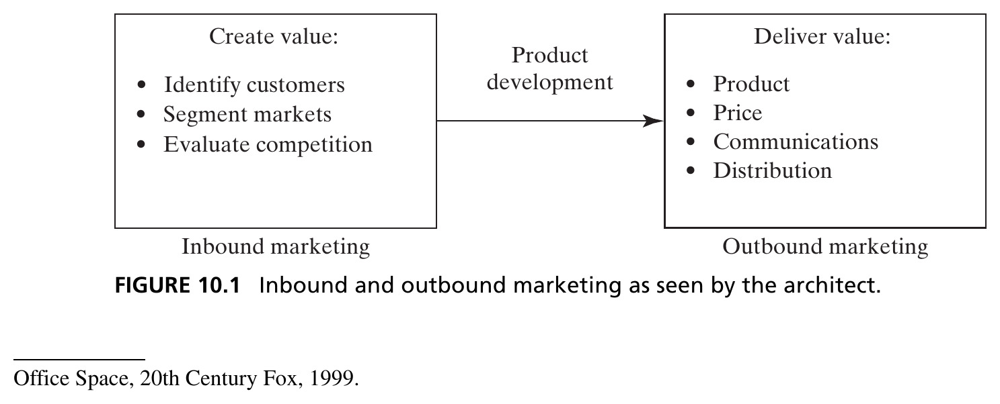
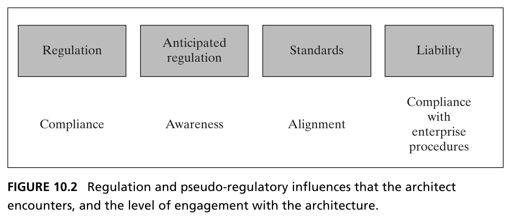
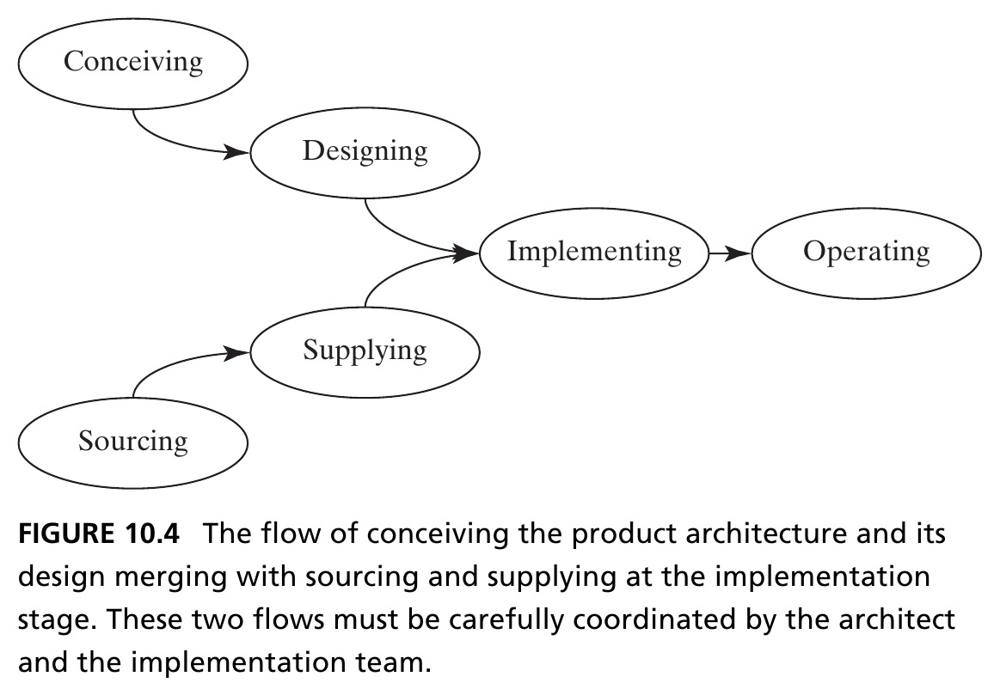
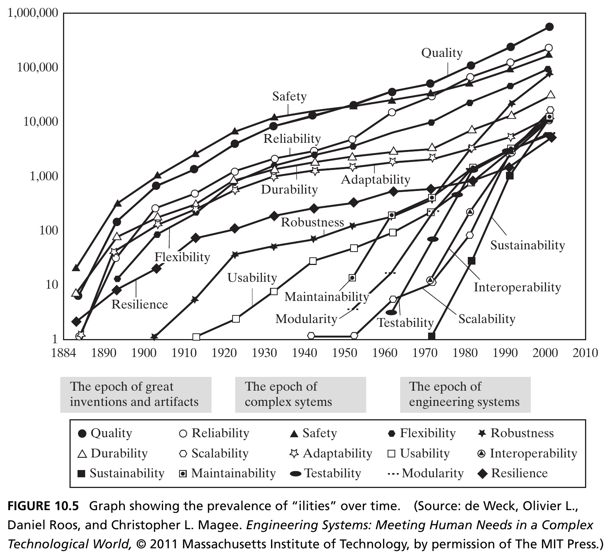
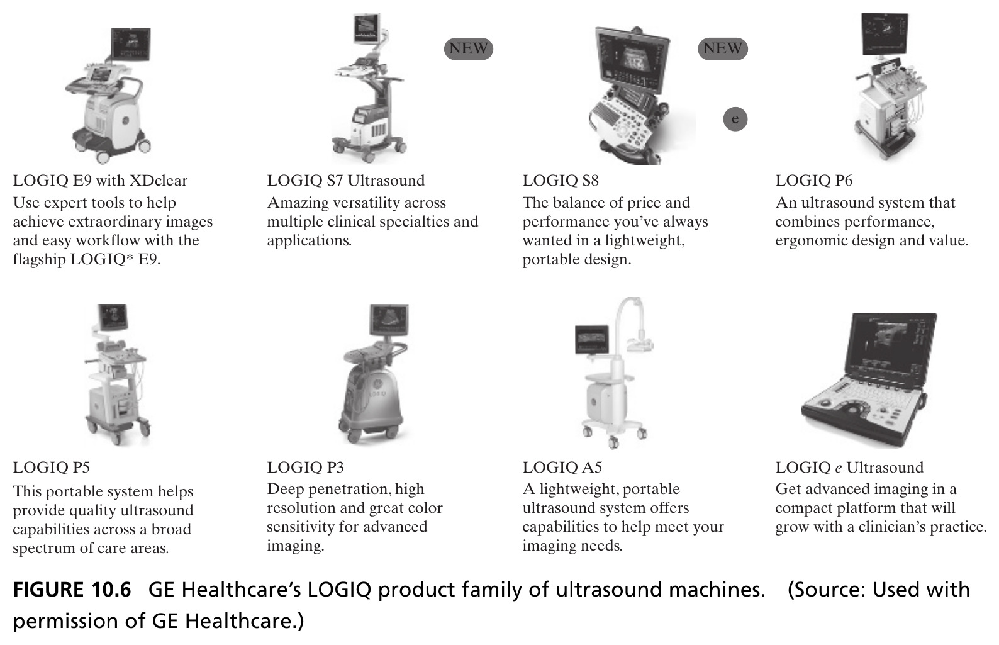
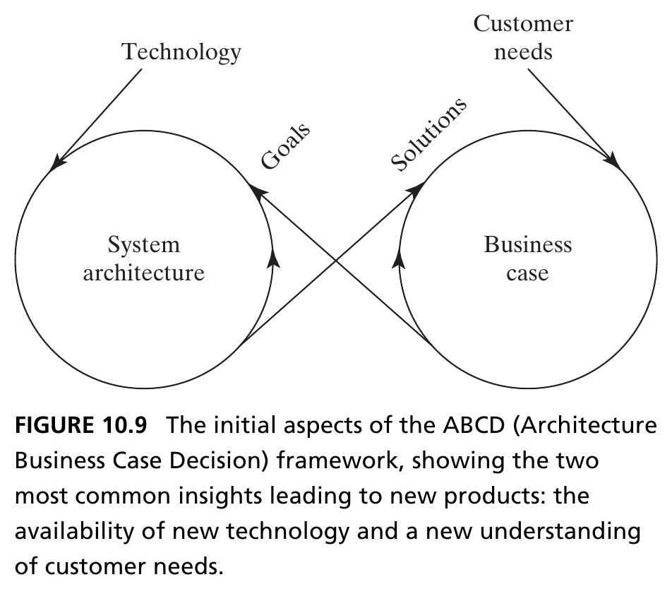
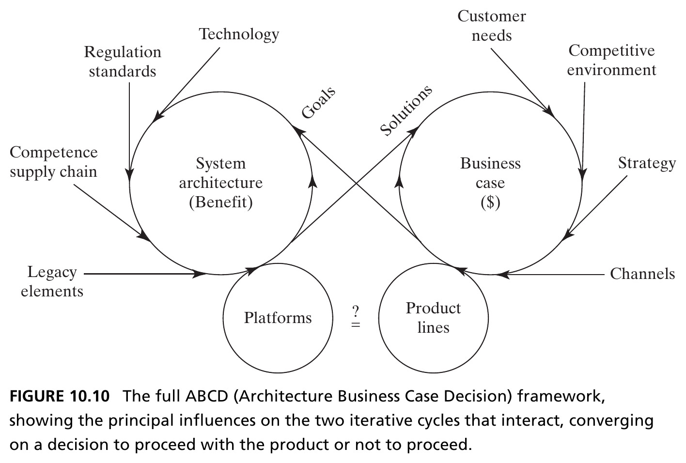
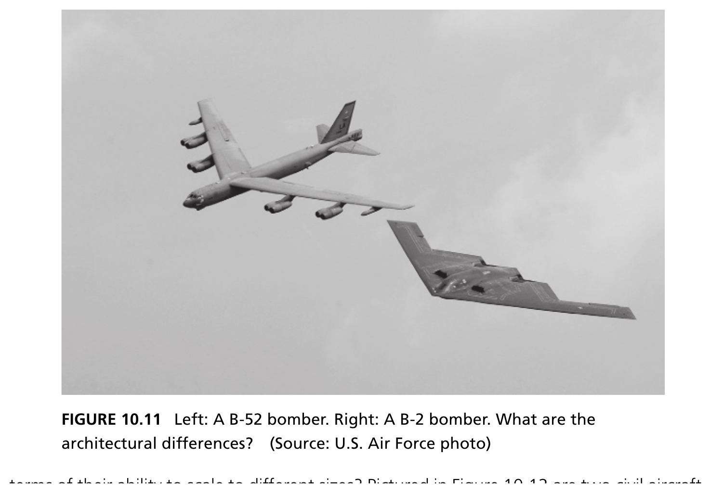
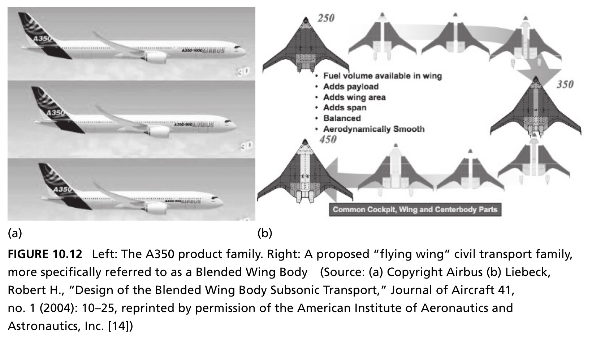
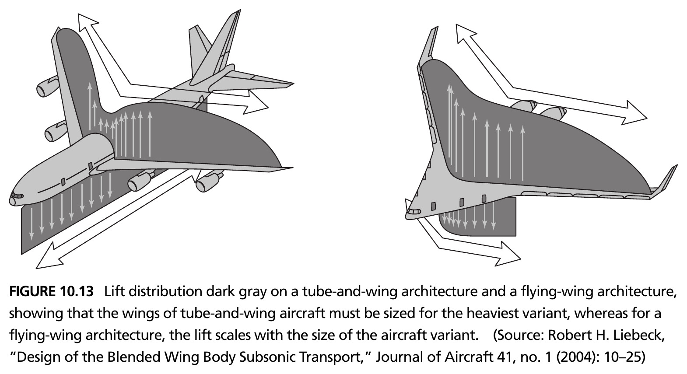

Upstream and Downstream Influences on System Architecture
Systems Architecture · Chapter 10
Beyond the Architect’s Immediate Control
- Chapter 9 established the architect’s role: reduce ambiguity, employ creativity, manage complexity
- Much of that ambiguity comes from upstream influences (strategy, marketing, customers, technology, regulation) and downstream influences (implementation, operations, product evolution)
- The architect doesn’t control these — but must understand them well enough to make good decisions
Tip
This chapter surveys the principal upstream and downstream influences, then shows how they combine in an iterative decision framework: the ABCD Product Case.
10.2 Upstream Influence: Strategy and Marketing
Strategy Sets the Stage
- Corporate and business unit strategy frames everything: what markets to compete in, what capabilities to build, what advantage to pursue
- The architect must interpret strategy — often incomplete or ambiguous — into concrete goals for the system
- Strategy rarely specifies architecture directly; it specifies intent, and the architect must translate intent into form and function
Figure 10.1 · Marketing as Seen by the Architect

Inbound marketing creates value: identifying customers, segmenting markets, evaluating competition. Outbound marketing delivers value: product, price, communications, distribution. Product development is the bridge between them. Source: Crawley, Cameron & Selva (2016), Fig. 10.1.
Working with Marketing
- Inbound marketing generates the voice of the customer — needs, preferences, willingness to pay — which the architect must translate into solution-neutral function (Ch. 7)
- Outbound marketing determines how the architecture itself gets communicated and positioned — an elegant architecture is easier to market
- The architect and marketing function are natural partners: marketing knows what customers want, the architect determines whether and how it can be delivered
Section 10.2 Summary
- Corporate strategy and marketing are major upstream influences the architect must interpret, not just receive
- Inbound marketing (creating value) and outbound marketing (delivering value) both interact with the architecture — inbound shapes goals, outbound shapes communication
- The architect’s job is translation: converting ambiguous strategic and market intent into concrete, solution-neutral functional goals
10.4 Upstream Influence: Regulation and Pseudo-Regulatory Influences
Regulation: Enabler and Barrier
- Regulation can be both an enabler of competitive advantage and a barrier to entry
- It can preserve an existing architecture well past its useful life — or generate an opportunity for new architectures to disrupt the market
- Example: Tier 4 Final emissions regulations for off-highway trucks upheld stricter standards, forcing firms to update their engine portfolios — but also opened a new competitive axis on fuel efficiency
Tip
Regulation affects architecture two ways: directly (mandatory backup cameras, medical device material rules) and indirectly, through downstream factors like manufacturing location, hiring rate, or addressable markets.
Figure 10.2 · Regulation and Pseudo-Regulatory Influences

Four categories, each demanding a different level of engagement: regulation (compliance), anticipated regulation (awareness), standards (alignment), liability (compliance with enterprise procedures). Source: Crawley, Cameron & Selva (2016), Fig. 10.2.
Sources and Levels of Regulation
- Regulations occur at federal, state, and city/county levels in the U.S., plus international regulations — agencies like the FDA, USDA, FAA, and EPA oversee federal rules
- Pseudo-regulations matter too: standards (voluntary but expected), anticipated regulation (not yet law, but coming), and litigation/liability precedent
- The architect must decide: which elements of regulation are important enough to shape the architecture, and which can be addressed later in detailed design and testing?
Section 10.4 Summary
- Regulation is a two-edged upstream influence — it can protect incumbents or create openings for disruption
- Beyond formal regulation, the architect must track pseudo-regulatory influences: anticipated regulation, standards, and liability exposure
- The key architectural judgment: separate regulatory elements that must shape the architecture from those addressable later, in detailed design
10.5 Upstream Influence: Technology
Infusing New Technology
- One of the architect’s pivotal roles: deciding whether and how to infuse a new technology into an architecture
- Three questions the architect must answer:
1. Will the technology be ready for infusion? 2. Will it actually create additional value for customers and stakeholders? 3. How will it be effectively transferred into the product or system?
Table: Technology Readiness Levels (TRL)
| TRL | Description |
|---|---|
| 1–2 | Basic principles observed; concept formulated (paper studies) |
| 3–4 | Active R&D; proof of concept; lab component validation |
| 5–6 | Validation in a relevant environment; prototype demo |
| 7–8 | Prototype demo in an operational environment; qualified via test |
| 9 | Proven through successful mission operations |
As defined by the U.S. Department of Defense. Technology development proceeds at its own pace, independent of a product’s timing — it may be ready, late, or have lain fallow so long the development team has dispersed. Source: Crawley, Cameron & Selva (2016), Fig. 10.3 (Dept. of Defense, TRA Guidelines, April 2011).
Know-How, Not Just IP
- Technology transfer discussions often jump straight to IP ownership — necessary, but not sufficient
- IP covers the “know what” of transfer; the real problem is transferring the “know how”
- People are by far the most effective means of knowledge transfer — when technology moves from a research lab to a product team, the people who developed it often move with it
Tip
Modern practice often de-invests in internal technology, instead sourcing from suppliers, universities, and government labs — an inherently inefficient marketplace, since developers rarely know the architect’s intended application or have the resources to reach the desired readiness level.
Section 10.5 Summary
- The architect must judge technology readiness (TRL), value creation, and transfer mechanism before infusing new technology
- Technology development is not linear — setbacks and iteration before final readiness are the norm, despite what a TRL rating might suggest
- Effective technology transfer requires people, not just IP ownership or licensing — “know-how” transfer is the harder, more important half
10.6 Downstream Influence: Implementation
Compressing Downstream Detail
- The downstream development of the system is an equally significant source of ambiguity
- An important architectural role: compress and extract relevant downstream details, and inject them back into decision-making up front
- We use implementation rather than “manufacturing” to cover both hardware and software — designing software means choosing algorithms/abstractions, data structures, program flow; implementing means writing and testing the actual code
Figure 10.4 · The Flow to Implementation

Conceiving and designing merge with sourcing and supplying at the implementation stage — two flows that must be carefully coordinated by the architect and the implementation team. Source: Crawley, Cameron & Selva (2016), Fig. 10.4.
Section 10.6 Summary
- Implementation covers both coding and manufacturing — the point where design and supply chain flows converge
- The architect’s job is to compress downstream implementation detail into decisions that can be made early, rather than discovering constraints too late
- Coordinating the conceive/design flow with the source/supply flow is a joint responsibility of the architect and the implementation team
10.7 Downstream Influence: Operations
Table: Operations Framework — Getting Ready and Going
| Phase | Air Transport Service | Refrigerator |
|---|---|---|
| Get Ready | Ticket purchasing, staff training, aircraft scheduling | Moving to point of sale, installing |
| Get Set | Check-in, baggage tagging, catering loading | Initial cool-down, loading food |
| Go – Primary Value | Traveler transporting | Food preserving |
| Go – Secondary Value | Nourishing, entertaining | Cold water/ice, freezing food |
A generic operations framework applied to three examples. Source: Crawley, Cameron & Selva (2016), Table 10.1.
Table: Operations Framework — Off-Nominal and Wind-Down
| Phase | Air Transport Service | Refrigerator |
|---|---|---|
| Go – Contingent | Informing traveler of delays | Easy clean-up of spills |
| Go – Emergency | Crash landing position, exiting via slides | Preventing entrapment |
| Get Unset / Unready | Unloading baggage, cleaning, storage | Cleaning out, disposing |
| Fix | Routine maintenance, upgrades | Event-driven maintenance/repair |
Continued from Table 10.1 — contingency, emergency, and end-of-cycle phases. Source: Crawley, Cameron & Selva (2016), Table 10.1.
Contingencies, Emergencies, and Stand-Alone Operations
Contingency operations
Off-normal, but recoverable without loss of primary function or personal/property damage. Performance may degrade gracefully — a spill in a refrigerator, a skid, a missed network packet. The architect builds in recovery provisions.
Emergency operations
Off-normal and outside the contingency window. All hope of primary function is abandoned — emphasis shifts entirely to saving life and minimizing property damage. The architect has a serious responsibility to anticipate these.
Tip
Stand-alone operations: the system must operate without connection to its normal supporting systems — common during test, but sometimes also in the field (e.g., a refrigerator keeping food cold through a power outage).
Figure 10.5 · The Prevalence of “Ilities” Over Time

15 “ilities” tracked by journal mentions since 1884 (log scale) — quality and safety dominate early; sustainability, interoperability, and scalability are recent arrivals. Not every “ility” is architecturally distinguishing, and they are not independent of one another. Source: Crawley, Cameron & Selva (2016), Fig. 10.5, after de Weck, Roos & Magee (2011), © MIT Press.
Section 10.7 Summary
- Operations can be organized into a generic framework — get ready, get set, go (nominal/contingent/emergency/stand-alone), get unset, get unready, and fix
- Contingencies are recoverable off-normal events; emergencies abandon primary function to protect life and property — the architect must anticipate both
- “Ilities” — quality, reliability, safety, maintainability, and more — are downstream-emergent attributes the architect must weigh, even though no single one is always architecturally distinguishing
10.8 Downstream Influence: Product Evolution
Platforming vs. Reuse
Platforming is the intentional sharing of parts and process across or within products.
- Platforms require the architect to invest once in a common part or module, predicting which future models will use it
- Unlike reuse (known performance, known use case), platforming means choosing constraints while living with uncertainty about future applications
- Platforming has become a key strategy for delivering product variety across multiple markets and vertical segments
Figure 10.6 · GE Healthcare’s LOGIQ Product Family

Eight ultrasound machine variants — from the flagship E9 down to the compact, growth-ready e Ultrasound — likely built on a shared architecture and shared components across the family. Source: Crawley, Cameron & Selva (2016), Fig. 10.6. Used with permission of GE Healthcare.
Platforming Always Costs Something
| Phase | Costs and Drawbacks |
|---|---|
| Conception | Constrains future variants; concentrated schedule/brand/cannibalization risk |
| Development | Designing to multiple use cases; more flexible test equipment |
| Production | Lower-end products inherit higher-end parts; added config management |
| Operations | Common-part failure affects many variants; possible perf. shortfall |
Platforming always involves additional investment, and it often involves other drawbacks or compromises. Source: Crawley, Cameron & Selva (2016), Fig. 10.8, reproduced from Cameron (2013) in Simpson (2013).
Section 10.8 Summary
- Platforming is the deliberate, forward-looking sharing of parts and process across a product family — distinct from simple reuse
- It’s a powerful strategy for delivering variety across markets, but never free: every phase (conception through operations) carries real costs and risks
- The architect must weigh the benefit of shared investment against the constraints it locks in for every future variant
10.9 Combining Influences: The ABCD Product Case
An Iterative Model, Not a Sum
- It’s not possible to tackle upstream and downstream influences in sequence, enumerate their goals and constraints, and simply sum them into a concept
- Innovation traditionally derives from one of two sources: a new customer need, or a new technology that improves the performance/cost ratio of meeting an existing need
- This is a simplified view — it misses value-chain integration, market expansion strategies, and installed-base service strategies — but it’s a useful anchor
Figure 10.9 · The Initial ABCD Framework

Architecture Business Case Decision: two iterative cycles. Technology and customer needs feed in; system architecture sets goals for the business case, which returns solutions back to the architecture. Source: Crawley, Cameron & Selva (2016), Fig. 10.9.
The Architect ↔︎ Business Case Interaction
- When product innovation identifies a customer need, that need sets goals for the system architecture — the architect evaluates feasibility and helps determine whether the business case “closes” (survives financial scrutiny) based on solution cost
- When product innovation derives from a new technology, the architect must evaluate whether the resulting solution actually addresses customer needs
- Either direction, the two cycles interact tightly — architecture and business case co-evolve, not develop independently
Figure 10.10 · The Full ABCD Framework

External drivers now flow in on both sides: regulation, standards, competence, and legacy elements shape the architecture cycle; competitive environment, strategy, and channels shape the business case cycle. Platforms and product lines converge on a proceed / do not proceed decision. Source: Crawley, Cameron & Selva (2016), Fig. 10.10.
Section 10.9 Summary
- The ABCD framework models architecture and business case as two coupled iterative cycles, not a linear sum of independent influences
- Technology and customer needs are the two most common entry points — but the full framework adds regulation, competence, competitive environment, and strategy as further external drivers
- The two cycles converge on a single decision: proceed with the product, or not
10.10 Case Study: The B-52 and B-2 Bombers
Two Bombers, Two Architectures
- Both aircraft deliver the same primary function — long-range strategic bombing — with radically different architectures
- The B-52: a conventional tube-and-wing design. The B-2: a flying wing (blended wing body)
- What upstream and downstream influences led to such different architectural choices for the same mission?

Figure 10.12 · Scaling a Product Family

Left: the Airbus A350 tube-and-wing family — a shared wing, stretched or shortened fuselage. Right: a proposed flying-wing civil transport family, scaling by adding center-body sections rather than stretching a tube. Source: Crawley, Cameron & Selva (2016), Fig. 10.12. (Left) © Airbus. (Right) Liebeck (2004), Journal of Aircraft 41(1), by permission of AIAA.
Why the Architectures Scale Differently
- For tube-and-wing aircraft, the wing is sized for the heaviest family member — since wings are expensive to optimize, they’re shared across the family with minor changes
- Net effect: the wing is “overdesigned” for the smallest family member — it can produce more lift than that aircraft needs
- The flying-wing family instead scales by splitting along the centerline and inserting center-body sections — a fundamentally different scaling mechanism
Figure 10.13 · Lift Distribution, Compared

Dark gray shows the lift-producing region on each architecture. For tube-and-wing, the fuselage produces almost no lift — lengthening it to add capacity forces the wing to grow to support the extra weight. For the flying wing, lift scales naturally with the size of the variant. Source: Crawley, Cameron & Selva (2016), Fig. 10.13, after Liebeck (2004).
The Architectural Lesson
A downstream consideration — how a family of products needs to scale — can be a first-order driver of architectural choice, just as important as the primary function itself.
- Both architectures deliver the mission function; the B-2’s flying wing also buys low radar cross-section (a different downstream/upstream driver: stealth requirements)
- Product-family scaling logic, manufacturing constraints, and regulatory/mission requirements all fed into architectures that look nothing alike, despite similar top-level function
Chapter 10 Summary
- Upstream influences — strategy, marketing, regulation, and technology — shape the goals and constraints the architect must resolve before architecture can begin
- Downstream influences — implementation, operations, and product evolution — must be compressed and fed back into decisions made much earlier
- The ABCD Product Case frames architecture and business case as two coupled iterative cycles, converging on a proceed/no-proceed decision
- The B-52/B-2 case study shows how the same influences, weighted differently, can produce radically different — yet equally valid — architectures for the same mission
Tip
Reference: Crawley, E., Cameron, B., & Selva, D. (2016). System Architecture: Strategy and Product Development for Complex Systems. Pearson. Chapter 10.
Next: Translating Needs into Goals
Chapter 11 returns to Part 3’s synthetic process, going deeper into how the architect converts fuzzy stakeholder needs into concrete, testable goals.

← Course Home · Systems Architecture · Chapter 10